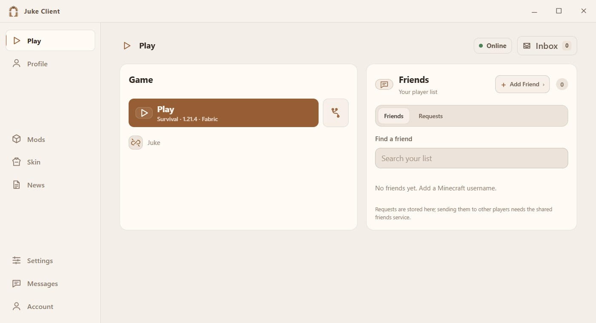

Mods and modpacks
Browse Modrinth, import modpacks and manage the files that belong to each profile.
Independent Minecraft: Java Edition launcher for Windows · macOS and Linux planned
Versions, profiles, loaders and mods in one window. Requires a Microsoft account that owns Minecraft: Java Edition.
In development — Windows build first

The parts of a launcher you actually use.
Browse Modrinth, import modpacks and manage the files that belong to each profile.
Keep game versions, mods, resource packs, shaders and worlds in separate game directories.
A lean Rust core keeps it light and fast — up to ten times faster than the most popular launchers.
Development build downloads not open yet
The Tauri/Rust rewrite added isolated profiles, loaders, modpack import, Java runtime downloads and a signed updater.
Read the changelogNo. Juke Client is independent. NOT AN OFFICIAL MINECRAFT PRODUCT. NOT APPROVED BY OR ASSOCIATED WITH MOJANG OR MICROSOFT.
Public builds are intended to be free. The launcher is proprietary with no open-source license; the public Juke-Client-Info repository contains project information only, and Juke-Client-Releases contains release assets only.
No. Sign-in uses a Microsoft account that owns Minecraft: Java Edition. Offline and cracked accounts are not supported.
Juke Client launches Java Edition profiles with Vanilla, Fabric, Forge, NeoForge or Quilt, using versions from the official version list where available.
No. There is no analytics or telemetry. Network requests are limited to Microsoft sign-in, Mojang version metadata and game downloads, Java runtime downloads when needed, loader metadata and files (Fabric, Forge, NeoForge and Quilt), mod catalogs, release news and update checks. See the privacy page for the service list.
Where to find us and ask questions.